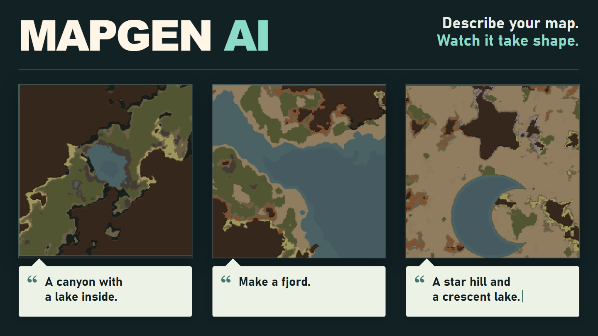

MAPGEN AI · WORKSHOP REFRESH · 2026.09.27
표지부터 소개글까지,
실제 맵으로 보여주는 새 구성.
채택한 표지에 맞춰 본문 카드 네 장과 한·영 소개글을 정리했습니다. 지도 자체는 다시 그리지 않고 실제 캡처를 사용했습니다.
새 카드 네 장의 외부 이미지 주소를 등록해야 사진 포함 소개글을 게시할 수 있습니다. 이전 Imgur 주소는 옛 카드라 재사용하지 않았습니다.

본문 카드 네 장
텍스트 생성 → 연속 수정 → 추천 비교 → 실제 도로와 다리. 이미지를 누르면 원본 크기로 열립니다.
무엇을 바꾸면 되나요?
| 위치 | 이번 구성 |
|---|---|
| 창작마당 항목 | 기존 MapGen AI를 유지합니다. |
| 대표 표지 | 위의 새 표지 한 장으로 교체합니다. 업로더용 파일이 준비돼 있습니다. |
| 설명 본문 | 아래 한·영 소개글로 교체합니다. 새 카드의 URL 네 개를 먼저 넣어야 합니다. |
| 상단 갤러리 | 기존 협곡·피오르·별/초승달 지형 예시는 유지합니다. 새 기능 사진 네 장을 추가하고, 오래된 UI나 반복되는 도넛 사진은 교체 대상으로 둡니다. |
| 기존 영상 | 유지합니다. 새 영상 시안은 이번 등록 묶음에 넣지 않았습니다. |
기존 항목이나 갤러리 전체를 삭제할 필요가 없습니다. 교체 안내 자세히 보기
한·영 소개글
외부 호스팅 없이 로컬 이미지로 미리 볼 수 있습니다. 아래 파일은 CARD_01_URL~04_URL을 채우기 전인 템플릿입니다.
소개글 전체 펼치기
Describe your map. Watch it take shape.
A canyon with a lake. A coastal fjord. A star-shaped hill. Describe the place you want to settle, check it in Map Preview, and keep chatting to adjust it before you start.
RimWorld 1.6 · Requires Harmony and Map Preview.
Bring your own AI: Gemini, OpenAI, OpenRouter, DeepSeek, Grok, GLM, Alibaba, a local server such as Ollama or LM Studio, or a custom endpoint.
Build on an idea
Create mountains, lakes and terrain shapes. Ask for clean geometric outlines or more natural edges. Then add an island, move it, or fill only part of an area with rich soil. Check each change in the preview; Undo takes you back one request.
Not sure what to make?
Get suggestions for the selected tile, or answer a short preference questionnaire first. Compare up to three previews. Pick one, refine a candidate, ask for new ideas, or select none. Your settings stay unchanged until you choose.
The prepared questions adapt to earlier answers and run locally. Asking the AI for final suggestions uses your selected provider; drawing their previews needs no additional AI call.
More than mountains and lakes
- Add local roads, with wooden bridges at suitable river or shallow-water crossings.
- Place ruins and ancient dangers by area, direction or landmark.
- Add supported tile features, including hot springs with Odyssey, when the selected tile allows them.
- Straighten an existing river or change the direction of an existing coast.
- Save and load map settings you want to reuse.
Start here
- Enable MapGen AI, Harmony and Map Preview.
- In Options > Mod settings > MapGen AI, choose your provider and model. Enter an API key if your provider requires one.
- Select a world tile and click ✦ AI Map Gen beside Map Preview.
- Describe a map, choose Quick suggestions, or try Find my preferences.
- When the preview looks right, click Generate with these settings. The settings apply when you start or settle on that tile.
Things to try
- "A diagonal canyon with a large central lake."
- "A natural mountain ring with one opening to the south."
- "Fill 70% of the ring's interior with rich soil."
- "Add a small island in the lake. Then put two small ruins on it."
- "Add a dirt road from the west edge to the east edge."
- "Recommend a map." Then: "Make option 2 more natural."
Before you start
- This prepares a new map. It does not edit a colony map you are already playing.
- Results vary by model and request. Review the preview and use Undo or Reset when needed.
- World rivers and coasts remain connected to the selected tile. You cannot add a coast inland. Tile features still have compatibility conditions.
- Roads need a valid route. Deep water, mountains and other obstacles can prevent a crossing.
- Map Preview shows terrain and layout. Plants, building interiors and loot appear on the generated map.
- Paid providers use your own key and credits. Retries and long-chat summaries can add requests. Local questionnaire answers and preview rendering make no AI calls. Keys are stored in your local RimWorld mod settings.
- Menus support English, Korean, Japanese and Simplified Chinese. Some newer Japanese and Chinese guidance appears in English.
- Image input is paused in this version.
Credits
Created by Choco with assistance from Claude and ChatGPT.
The provider settings UI was inspired by RimTalk.
원하는 맵을 말로 설명하세요.
호수가 있는 협곡, 해안의 피오르, 별 모양 언덕까지. 정착하고 싶은 곳을 설명하고 Map Preview로 확인하세요. 마음에 들 때까지 대화로 조정한 다음 그곳에서 시작할 수 있습니다.
RimWorld 1.6 · Harmony와 Map Preview가 필요합니다.
원하는 AI 사용: Gemini, OpenAI, OpenRouter, DeepSeek, Grok, GLM, Alibaba, Ollama·LM Studio 같은 로컬 서버 또는 사용자 지정 엔드포인트를 연결할 수 있습니다.
대화하면서 다듬기
산과 호수, 다양한 모양의 지형을 만들 수 있습니다. 정확한 도형도, 가장자리가 불규칙한 자연스러운 모양도 요청해 보세요. 이어서 섬을 추가하거나 옮기고, 특정 영역의 일부만 비옥한 토양으로 채울 수도 있습니다. 매번 미리보기로 확인하고, 잘못된 요청은 되돌리기로 한 단계씩 취소하세요.
무엇을 만들지 모르겠다면
선택한 타일에 맞는 추천을 바로 받거나, 먼저 간단한 취향 문답에 답할 수 있습니다. 최대 세 후보의 미리보기를 비교하고 하나를 고르세요. 선택 전에 후보를 수정하거나, 다시 추천받거나, 아무것도 선택하지 않을 수도 있습니다. 선택하기 전에는 현재 설정이 바뀌지 않습니다.
문답은 준비된 질문을 앞선 답변에 맞춰 보여주며 로컬에서 실행됩니다. 최종 추천을 요청할 때는 선택한 AI를 사용하지만, 결과 그림을 그리는 데에는 추가 AI 호출이 필요하지 않습니다.
산과 호수 외에도
- 맵 내부에 도로를 추가하고, 다리를 놓을 수 있는 강·얕은 물 구간에는 나무 다리를 연결합니다.
- 영역, 방향, 지형을 기준으로 유적과 고대 위험의 위치를 지정합니다.
- 선택한 타일의 조건에 맞는 지형 특징을 추가합니다. 오디세이가 있다면 온천도 요청할 수 있습니다.
- 기존 강을 곧게 만들거나, 기존 해안의 방향을 바꿉니다.
- 마음에 드는 맵 설정을 저장하고 다시 불러옵니다.
시작하기
- MapGen AI, Harmony, Map Preview를 활성화합니다.
- 설정 > 모드 설정 > MapGen AI에서 제공자와 모델을 선택합니다. 필요한 제공자는 API 키도 입력합니다.
- 세계지도에서 타일을 선택하고 Map Preview 옆의 ✦ AI Map Gen을 누릅니다.
- 원하는 맵을 직접 설명하거나, 바로 추천받기 또는 취향 문답을 선택합니다.
- 미리보기가 마음에 들면 이 설정으로 맵 생성을 누릅니다. 해당 타일에서 시작하거나 정착할 때 설정이 적용됩니다.
이렇게 요청해 보세요
- "대각선 협곡 중앙에 큰 호수가 있는 맵."
- "남쪽에 출구가 하나 있는 자연스러운 도넛 모양 산."
- "도넛 안쪽의 70%만 비옥한 토양으로 채워 줘."
- "호수 안에 작은 섬을 추가하고, 섬에 작은 유적 두 개를 놓아 줘."
- "서쪽 끝에서 동쪽 끝까지 흙길을 추가해 줘."
- "맵 추천해 줘." 이어서 "2번을 좀 더 자연스럽게 해 줘."
알아두세요
- 새로 생성할 맵을 설정하는 모드입니다. 이미 플레이 중인 정착지 맵은 편집하지 않습니다.
- 결과는 모델과 요청에 따라 달라집니다. 미리보기로 확인하고, 필요하면 되돌리기나 초기화를 사용하세요.
- 세계지도의 강·해안 연결은 유지됩니다. 내륙에 해안을 만들 수 없으며, 지형 특징도 타일별 적용 조건이 있습니다.
- 도로에는 연결 가능한 경로가 필요합니다. 깊은 물이나 산, 다른 장애물 때문에 배치하지 못할 수 있습니다.
- Map Preview는 지형과 배치를 보여줍니다. 식물, 건물 내부와 전리품은 실제 맵 생성 후 나타납니다.
- 유료 AI는 본인의 API 키와 크레딧을 사용합니다. 응답 재시도나 긴 대화 요약에는 추가 요청이 발생할 수 있습니다. 로컬 문답과 미리보기 렌더링에는 AI 호출이 없습니다. 키는 PC의 RimWorld 모드 설정에 저장됩니다.
- 영어·한국어·일본어·중국어 간체 메뉴를 지원합니다. 일본어·중국어의 일부 최신 안내는 영어로 표시됩니다.
- 이번 버전에서는 이미지 입력 기능을 잠시 중단했습니다.
제작
Choco 제작. Claude와 ChatGPT의 도움을 받았습니다.
AI 제공자 설정 UI는 RimTalk에서 영감을 받았습니다.
추가할 갤러리 사진
추천 화면, 취향 문답, 후보 수정, 실제 도로·다리. 지형 예시와 역할이 겹치지 않게 골랐습니다.


확인한 범위
카드의 이미지 로딩·글씨 넘침, 소개글 서식, 업로드 파일 복사 일치 여부를 확인했습니다. 이번 작업은 홍보 자료 수정이며, 새 모델 호출이나 게임 기능 변경은 하지 않았습니다.
협곡은 기존 공개용 실제 캡처입니다. 수정 단계와 도로는 9월 27일 모델 응답을 재사용해 찍은 게임 캡처이며, 추천·문답은 같은 날 실제 UI 캡처입니다. 출처와 재현 방법: 자료 기록.